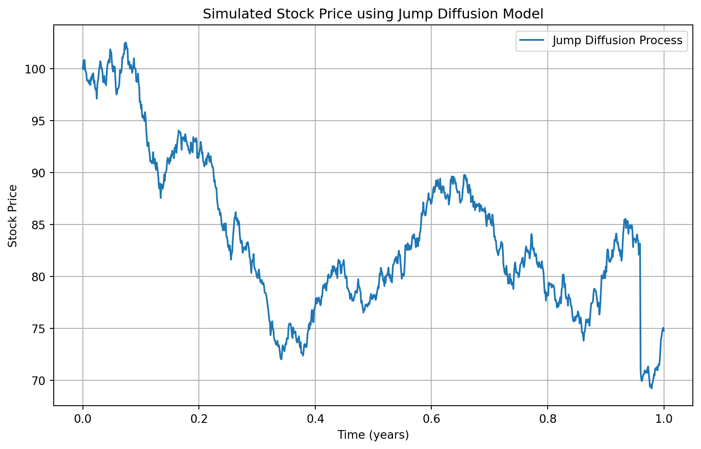
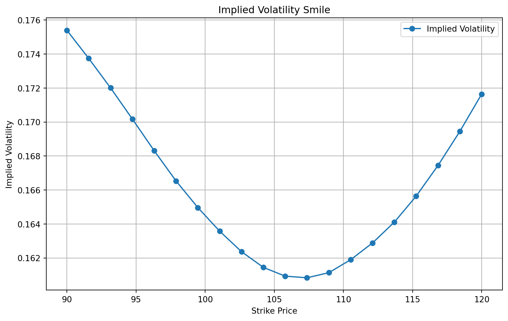

18 Jumps
In the classical Black-Scholes model, stock prices are assumed to follow a geometric Brownian motion, which is characterized by continuous paths and normally distributed returns. While this model has been widely used due to its simplicity and analytical tractability, it fails to capture certain empirical phenomena observed in financial markets, such as sudden and significant price changes (jumps) and the heavy tails of return distributions.
To address these shortcomings, the jump diffusion model was introduced by Robert C. Merton in 1976. This model extends the Black-Scholes framework by incorporating jumps into the stock price dynamics, thereby allowing for discontinuous price paths. The jump diffusion model is better suited to describe the behavior of financial assets that exhibit sudden price changes due to news, earnings announcements, or other market events.
In a jump diffusion model, the stock price \(S_t\) is governed by the following stochastic differential equation (SD\E):
\[ dS_t = \mu S_t \, dt + \sigma S_t \, dW_t + S_t \, dJ_t \]
where \(\mu\) is the drift rate, \(\sigma\) is the volatility, \(B_t\) is a standard Brownian motion, \(J_t\) is a jump process.
The jump process \(J_t\) is typically modeled as a compound Poisson process:
\[ J_t = \sum_{i=1}^{N_t} (Y_i - 1) \]
where \(N_t\) is a Poisson process with intensity \(\lambda\), \(Y_i\) are i.i.d. random variables representing the relative jump sizes, with \(Y_i - 1\) being the actual jump size.
The jump diffusion model introduces several important implications for the behavior of stock prices and the pricing of derivative securities:
- Heavy Tails: The inclusion of jumps leads to a return distribution with heavier tails compared to the normal distribution, aligning better with empirical observations.
- Volatility Smile: The model can generate implied volatility smiles, where implied volatility varies with strike price and maturity, a feature commonly observed in market data.
- Risk Management: Understanding the jump component is crucial for risk management, as it affects the likelihood of extreme price movements and the potential for large losses.
The following python code simulates the stock price that evolves as a jump diffusion.
Code
import numpy as np
import matplotlib.pyplot as plt
def simulate_jump_diffusion(S0, mu, sigma, lamb, m, delta, T, N):
"""
Simulate a jump diffusion process.
Parameters:
S0 : float - initial stock price
mu : float - drift rate
sigma : float - volatility
lamb : float - intensity of the Poisson process
m : float - mean of the jump size distribution
delta : float - standard deviation of the jump size distribution
T : float - total time
N : int - number of time steps
Returns:
t : numpy array - time points
S : numpy array - simulated stock prices
"""
dt = T / N
t = np.linspace(0, T, N + 1)
S = np.zeros(N + 1)
S[0] = S0
for i in range(1, N + 1):
Z = np.random.normal(0, 1) # Normal random variable for the diffusion part
J = np.random.poisson(lamb * dt) # Poisson random variable for jumps
# Sum of log-normal distributed jumps
Y = np.sum(np.random.normal(m, delta, J))
# Update stock price
S[i] = S[i - 1] * np.exp((mu - 0.5 * sigma ** 2) * dt + sigma * np.sqrt(dt) * Z + Y)
return t, S
# Parameters
S0 = 100 # Initial stock price
mu = 0.1 # Drift rate
sigma = 0.2 # Volatility
lamb = 0.75 # Intensity of the Poisson process (average number of jumps per unit time)
m = 0.02 # Mean of the jump size distribution (log-normal)
delta = 0.1 # Standard deviation of the jump size distribution (log-normal)
T = 1.0 # Total time (1 year)
N = 1000 # Number of time steps
# Simulate the jump diffusion process
t, S = simulate_jump_diffusion(S0, mu, sigma, lamb, m, delta, T, N)
# Plot the simulated stock prices
plt.figure(figsize=(10, 6))
plt.plot(t, S, label='Jump Diffusion Process')
plt.title('Simulated Stock Price using Jump Diffusion Model')
plt.xlabel('Time (years)')
plt.ylabel('Stock Price')
plt.legend()
plt.grid(True)
plt.show()
The jump diffusion model offers a more realistic framework for modeling stock prices by incorporating the possibility of sudden jumps. This enhancement over the classical Black-Scholes model allows for better capturing the empirical characteristics of financial markets, thereby improving the accuracy of option pricing and risk management practices.
18.1 Smiles and Smirks Again
As mentioned before, the GARCH, stochastic volatility and jump diffusion models can generate fat-tailed distributions for the asset price \(S_T\). Thus, they can be more nearly consistent with the option smiles discussed in ?sec-s:smiles than is the Black-Scholes model (though it appears that one must include jumps in asset prices as well as stochastic volatility in order to duplicate market prices with an option pricing formula). To understand the relation, let \(\sigma_\text{am}\) denote the implied volatility from an at-the-money call option, i.e., a call option with strike \(K=S_0\). The characteristic of a smile is that implied volatilities from options of the same maturity with strike prices significantly above and below \(S_0\) are higher than \(\sigma_\text{am}\).
A strike price higher than \(S_0\) corresponds to an out-of-the money call option. The high implied volatility means that the market is pricing the right to buy at \(K>S_0\) above the Black-Scholes price computed from the volatility \(\sigma_\text{am}\); thus, the market must attach a higher probability to stock prices \(S_T>S_0\) than the volatility \(\sigma_\text{am}\) would suggest.
A strike price lower than \(S_0\) corresponds to an in-the-money call option. The put option with the same strike is out of the money. The high implied volatility means that the market is pricing call options above the Black-Scholes price computed from the volatility \(\sigma_\text{am}\). By put-call parity, the market must also be pricing put options above the Black-Scholes price computed from the volatility \(\sigma_\text{am}\). The high prices for the rights to buy and sell at \(K<S_0\) means that the market must attach a higher probability to stock prices \(S_T<S_0\) than the volatility \(\sigma_\text{am}\) would suggest. In particular, the high price for the right to sell at \(K<S_0\) means a high insurance premium for owners of the asset who seek to insure their positions, which is consistent with a market view that there is a significant probability of a large loss. This can be interpreted as a crash premium. Indeed, the implied volatilities at strikes less than \(S_0\) are typically higher than the implied volatilities at strikes above \(S_0\) (giving the smile the appearance of a smirk, as discussed in ?sec-s:smiles), which is consistent with a larger probability of crashes than of booms (a fatter tail for low returns than for high).
As an example, the following code shows that the stochstic volatility model can generate implied volatility smiles.
This program involes (1) Simulating Heston Model: simulate_heston_paths function generates stock price paths using the Heston model parameters. (2) Calculating call price by discounting the averaged call payoffs across the stock price sample paths (3) Calculating Black Scholes call price : black_scholes_call_price function calculates the call option price using the Black-Scholes formula. (4) Calculating implied volatility: implied_volatility function computes the implied volatility by solving for the volatility that matches the Black-Scholes call price to the simulated call price. (5) Repeating Steps (2)-(4) for different strik prices. (6) Plotting the implied volatility against strike prices fixing the initial stock price at $100.
Code
import numpy as np
import matplotlib.pyplot as plt
from scipy.stats import norm
from scipy.optimize import brentq
# Heston model parameters
S0 = 100 # Initial stock price
V0 = 0.04 # Initial variance
r = 0.05 # Risk-free rate
q = 0.01 # Dividend yield
T = 1 # Time to maturity (in years)
kappa = 0.25 # Rate of mean reversion of variance
theta = 0.04 # Long-term variance
sigma = 0.5 # Volatility of variance
rho = -0.2 # Correlation between the two Wiener processes
dt = 1/252 # Length of each time period (daily)
N = 252 # Number of time periods (one year)
n_simulations = 10000 # Number of simulations
def simulate_heston_paths(S0, V0, r, q, T, kappa, theta, sigma, rho, dt, N, n_simulations):
S = np.zeros((N + 1, n_simulations))
V = np.zeros((N + 1, n_simulations))
S[0] = S0
V[0] = V0
for t in range(1, N + 1):
Z1 = np.random.normal(size=n_simulations)
Z2 = np.random.normal(size=n_simulations)
W1 = Z1
W2 = rho * Z1 + np.sqrt(1 - rho**2) * Z2
V[t] = np.maximum(V[t-1] + kappa * (theta - V[t-1]) * dt + sigma * np.sqrt(V[t-1] * dt) * W2, 0)
S[t] = S[t-1] * np.exp((r - q - 0.5 * V[t-1]) * dt + np.sqrt(V[t-1] * dt) * W1)
return S, V
def black_scholes_call_price(S, K, T, r, sigma):
d1 = (np.log(S / K) + (r + 0.5 * sigma**2) * T) / (sigma * np.sqrt(T))
d2 = d1 - sigma * np.sqrt(T)
call_price = S * norm.cdf(d1) - K * np.exp(-r * T) * norm.cdf(d2)
return call_price
def implied_volatility(C, S, K, T, r):
def objective_function(sigma):
return black_scholes_call_price(S, K, T, r, sigma) - C
try:
return brentq(objective_function, 0.001, 5.0)
except ValueError:
return np.nan
# Simulate paths using the Heston model
S_paths, _ = simulate_heston_paths(S0, V0, r, q, T, kappa, theta, sigma, rho, dt, N, n_simulations)
# Calculate option prices at different strike prices
strike_prices = np.linspace(90, 120, 20)
call_prices = np.zeros_like(strike_prices)
for i, K in enumerate(strike_prices):
call_payoffs = np.maximum(S_paths[-1] - K, 0)
call_prices[i] = np.mean(call_payoffs) * np.exp(-r * T)
# Calculate implied volatilities
implied_vols = [implied_volatility(C, S0, K, T, r) for C, K in zip(call_prices, strike_prices)]
# Filter out NaN values that may occur
valid_indices = ~np.isnan(implied_vols)
strike_prices = strike_prices[valid_indices]
implied_vols = np.array(implied_vols)[valid_indices]
# Plot the implied volatility smile
plt.figure(figsize=(10, 6))
plt.plot(strike_prices, implied_vols, label='Implied Volatility', marker='o')
plt.title('Implied Volatility Smile')
plt.xlabel('Strike Price')
plt.ylabel('Implied Volatility')
plt.legend()
plt.grid(True)
plt.show()
Exercise 18.1 The purpose of this exercise is to generate a fat-tailed distribution from a model that is simpler than the GARCH and stochastic volatility models but has somewhat the same flavor. The distribution will be a mixture of normals. Create a python program in which the user can input \(S\), \(r\), \(q\), \(T\), \(\sigma_1\) and \(\sigma_2\). Use these inputs to produce a column of 500 simulated \(\log S_T\). In each simulation, define \(\log S_T\) as \[\log S_T = \log S_0 + \left(r-q-\frac{1}{2}\sigma^2\right)T + \sigma \sqrt{T}z\;,\] where \(z\) is a standard normal, \(\sigma = x\sigma_1 + (1-x)\sigma_2\), and \(x\) is a random variable that equals zero or one with equal probabilities.
Calculate the mean and standard deviation of the \(\log S_T\) and calculate the fraction that lie more than two standard deviations below the mean. If the \(\log S_T\) all came from a normal distribution with the same variance, then this fraction should equal \(\mathrm{N}(-2) =\) 2.275%. If the fraction is higher, then the distribution is fat tailed. (Of course, the actual fraction would differ from 2.275% in any particular case due to the randomness of the simulation, even if all of the \(\log S_T\) came from a normal distribution with the same variance).
Exercise 18.2 Create a python program prompting the user to input the same inputs as in the simulating_garch function except for the initial volatility and \(\theta\). Simulate 500 paths of a GARCH process and output \(\log S_T\) for each simulation (you don’t need to output the entire paths as in the simulating_garch function). Take the initial volatility to be 0.3 and \(\theta = 0.09\). Determine whether the distribution is fat-tailed by computing the fraction of the \(\log S_T\) that lie two or more standard deviations below the mean, as in the previous exercise. For what values of \(\kappa\) and \(\lambda\) does the distribution appear to be especially fat-tailed?